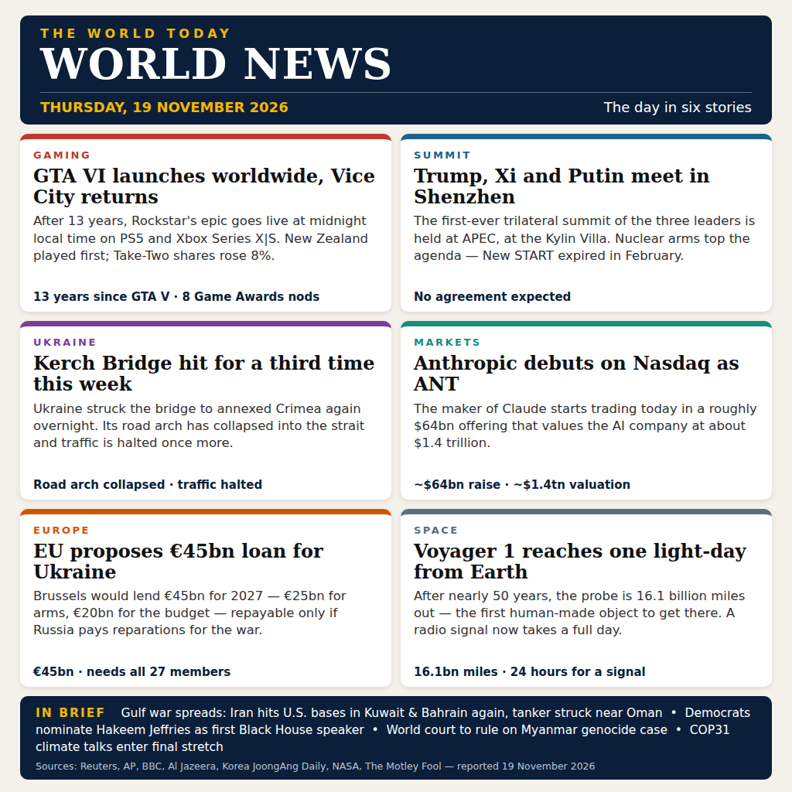

19 November 2026 — World News in One Image
A single 1024×1024 infographic summing up the day's world news.

The six stories
- GTA VI is out Rockstar's Grand Theft Auto VI launches worldwide on 19 November after a 13-year wait, scoring 99/100 on Metacritic from 147 reviews; fans celebrate in Miami and Dublin.
- Kerch Bridge hit for the third time in a week Ukraine strikes the bridge linking annexed Crimea to Russia again on 19 November; a 227-metre section of roadway collapsed in the earlier strikes and traffic is halted.
- Trump, Xi and Putin meet in Shenzhen The leaders of the United States, China and Russia hold their first three-way summit on the sidelines of the APEC forum, with Ukraine and trade on the agenda.
- EU proposes a €45bn loan for Ukraine Europe puts forward a €45 billion loan to keep Ukraine funded as the three leaders meet in Shenzhen.
- Voyager 1 reaches one light-day from Earth NASA's probe, launched in 1977, becomes the first human-made object to travel a full light-day from Earth, still sending data from interstellar space.
- Anthropic's record $81.3bn IPO The Claude maker prices its IPO at $83 a share — the largest stock-market debut on record — and starts trading on the Nasdaq on 19 November under the ticker ANT.